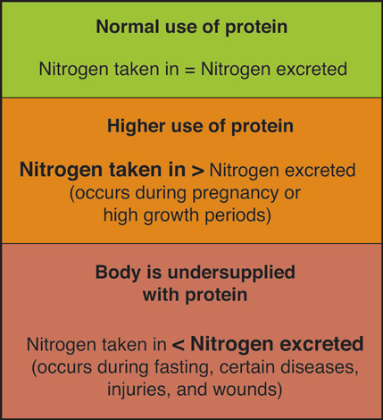

We have discussed what proteins are, how they are made, how they are digested and absorbed, the many functions of proteins in the body, and the consequences of having too little or too much protein in the diet. This section will provide you with information on how to determine the recommended amount of protein for you, and your many choices in designing an optimal diet with high-quality protein sources.
The recommendations set by the IOM for the Recommended Daily Allowance (RDA) and AMDR for protein for different age groups are listed in Table 6.2 "Dietary Reference Intakes for Protein". A Tolerable Upper Intake Limit for protein has not been set, but it is recommended that you not exceed the upper end of the AMDR.
Table 6.2 Dietary Reference Intakes for Protein
| Age Group | RDA (g/day) | AMDR (% calories) |
|---|---|---|
| Infants (0–6 mo) | 9.1* | Not determined |
| Infants (7–12 mo) | 11.0 | Not determined |
| Children (1–3) | 13.0 | 5–20 |
| Children (4–8) | 19.0 | 10–30 |
| Children (9–13) | 34.0 | 10–30 |
| Males (14–18) | 52.0 | 10–30 |
| Females (14–18) | 46.0 | 10–30 |
| Adult Males (19+) | 56.0 | 10–35 |
| Adult Females (19+) | 46.0 | 10–35 |
| * Denotes Adequate Intake | ||
Source: Institute of Medicine. “Dietary Reference Intakes: Macronutrients.” Dietary Reference Intakes for Energy, Carbohydrate, Fiber, Fat, Fatty Acids, Cholesterol, Protein, and Amino Acids. September 5, 2002.
The appropriate amount of protein in a person’s diet is that which maintains a balance between what is taken in and what is used. The RDAs for protein were determined by assessing nitrogen balanceWhen the amount of protein input into the body equals the amount used up and excreted.. Nitrogen is one of the four basic elements contained in all amino acids. When proteins are broken down and amino acids are catabolized, nitrogen is released. Remember that when the liver breaks down amino acids, it produces ammonia, which is rapidly converted to nontoxic, nitrogen-containing urea, which is then transported to the kidneys for excretion. Most nitrogen is lost as urea in the urine, but urea is also excreted in the feces. Proteins are also lost in sweat and as hair and nails grow. The RDA, therefore, is the amount of protein a person should consume in their diet to balance the amount of protein used up and lost from the body. For healthy adults, this amount of protein was determined to be 0.8 grams of protein per kilogram of body weight. You can calculate your exact recommended protein intake per day based on your weight by using the following equation:
(Weight in lbs. ÷ 2.2 kg/lb) × 0.8 g/kgNote that if a person is overweight, the amount of dietary protein recommended can be overestimated.
The IOM used data from multiple studies that determined nitrogen balance in people of different age groups to calculate the RDA for protein. A person is said to be in nitrogen balance when the nitrogen input equals the amount of nitrogen used and excreted. A person is in negative nitrogen balance when the amount of excreted nitrogen is greater than that consumed, meaning that the body is breaking down more protein to meet its demands. This state of imbalance can occur in people who have certain diseases, such as cancer or muscular dystrophy. Someone who has a low-protein diet may also be in negative nitrogen balance as they are taking in less protein than what they actually need. Positive nitrogen balance occurs when a person excretes less nitrogen than what is taken in by the diet, such as during child growth or pregnancy. At these times the body requires more protein to build new tissues, so more of what gets consumed gets used up and less nitrogen is excreted. A person healing from a severe wound may also be in positive nitrogen balance because protein is being used up to repair tissues.
Figure 6.8 Nitrogen Balance
The protein food group consists of foods made from meat, seafood, poultry, eggs, soy, beans, peas, and seeds. According to the Harvard School of Public Health, “animal protein and vegetable protein probably have the same effects on health. It’s the protein package that’s likely to make a difference.”Harvard School of Public Health. “Protein: The Bottom Line.” The Nutrition Source. © 2012 The President and Fellows of Harvard University. http://www.hsph.harvard.edu/nutritionsource/what-should-you-eat/protein/. Simply put, different protein sources differ in their additional components, so it is necessary to pay attention to the whole nutrient “package.” Protein-rich animal-based foods commonly have high amounts of B vitamins, vitamin E, iron, magnesium, and zinc. Seafood often contains healthy fats, and plant sources of protein contain a high amount of fiber. Some animal-based protein-rich foods have an unhealthy amount of saturated fat and cholesterol. When choosing your dietary sources of protein, take note of the other nutrients and also the nonnutrients, such as cholesterol, dyes, and preservatives, in order to make good selections that will benefit your health. For instance, a hamburger patty made from 80 percent lean meat contains 22 grams of protein, 5.7 grams of saturated fat, and 77 milligrams of cholesterol. A burger made from 95 percent lean meat also contains 22 grams of protein, but has 2.3 grams of saturated fat and 60 milligrams of cholesterol. A cup of boiled soybeans contains 29 grams of protein, 2.2 grams of saturated fat, and no cholesterol. For more comparisons of protein-rich foods, see Table 6.3 "Sources of Dietary Protein". To find out the complete nutrient package of different foods, visit the US Department of Agriculture (USDA) website listed in Note 6.55 "Interactive 6.3".
Table 6.3 Sources of Dietary Protein
| Food | Protein Content (g) | Saturated Fat (g) | Cholesterol (mg) | Calories |
|---|---|---|---|---|
| Hamburger patty 3 oz. (80% lean) | 22.0 | 5.7 | 77 | 230 |
| Hamburger patty 3 oz. (95% lean) | 22.0 | 2.3 | 60 | 139 |
| Top sirloin 3 oz. | 25.8 | 2.0 | 76 | 158 |
| Beef chuck 3 oz. (lean, trimmed) | 22.2 | 1.8 | 51 | 135 |
| Pork loin 3 oz. | 24.3 | 3.0 | 69 | 178 |
| Pork ribs (country style, 1 piece) | 56.4 | 22.2 | 222 | 790 |
| Chicken breast (roasted, 1 c.) | 43.4 | 1.4 | 119 | 231 |
| Chicken thigh (roasted, 1 thigh) | 13.5 | 1.6 | 49 | 109 |
| Chicken leg (roasted, 1 leg) | 29.6 | 4.2 | 105 | 264 |
| Salmon 3 oz. | 18.8 | 2.1 | 54 | 175 |
| Tilapia 3 oz. | 22.2 | 0.8 | 48 | 109 |
| Halibut 3 oz. | 22.7 | 0.4 | 35 | 119 |
| Shrimp 3 oz. | 17.8 | 0.2 | 166 | 84 |
| Shrimp (breaded, fried, 6–8 pcs.) | 18.9 | 5.4 | 200 | 454 |
| Tuna 3 oz. (canned) | 21.7 | 0.2 | 26 | 99 |
| Soybeans 1 c. (boiled) | 29.0 | 2.2 | 0 | 298 |
| Lentils 1 c. (boiled) | 17.9 | 0.1 | 0 | 226 |
| Kidney beans 1 c. (canned) | 13.5 | 0.2 | 0 | 215 |
| Sunflower seeds 1 c. | 9.6 | 2.0 | 0 | 269 |
This interactive USDA tool allows you to enter the foods you eat (with serving size) and find out the whole nutrient package.
The USDA provides some tips for choosing your dietary protein sources. Their motto is, “Go Lean with Protein” (see Note 6.56 "Interactive 6.4"). The overall suggestion is to eat a variety of protein-rich foods to benefit health. The USDA recommends lean meats, such as round steaks, top sirloin, extra lean ground beef, pork loin, and skinless chicken. Additionally, a person should consume 8 ounces of cooked seafood every week (typically as two 4-ounce servings) to assure they are getting the healthy omega-3 fatty acids that have been linked to a lower risk for heart disease. Another tip is choosing to eat beans, peas, or soy products as a main dish. Some of the menu choices include chili with kidney and pinto beans, hummus on pita bread, and black bean enchiladas. You could also enjoy nuts in a variety of ways. You can put them on a salad, in a stir-fry, or use them as a topping for steamed vegetables in place of meat or cheese. If you do not eat meat, the USDA has much more information on how to get all the protein you need from a plant-based diet. When choosing the best protein-rich foods to eat, pay attention to the whole nutrient package and remember to select from a variety of protein sources to get all the other essential micronutrients.
The USDA manages the website choosemyplate.gov. The site provides a lot of tips and information about protein-rich foods.
Try some new, healthy, protein-rich food recipes by visiting the Harvard School of Public Health website, http://hvrd.me/OJRkpV. You will find recipes for foods such as spicy lemongrass tofu with Asian basil, fish Creole, and spicy chicken kebabs.
While protein is contained in a wide variety of foods, it differs in quality. High-quality protein contains all the essential amino acids in the proportions needed by the human body. The amino acid profile of different foods is therefore one component of protein quality. Foods that contain some of the essential amino acids are called incomplete protein sourcesFoods that contain some of the essential amino acids., while those that contain all nine essential amino acids are called complete protein sourcesFoods that contain all nine of the essential amino acids., or high-quality protein sources. Foods that are complete protein sources include animal foods such as milk, cheese, eggs, fish, poultry, and meat, and a few plant foods, such as soy and quinoa (Figure 6.9 "Complete and Incomplete Protein Sources"). The only animal-based protein that is not complete is gelatin, which consists of the protein, collagen.
Most plant-based foods are deficient in at least one essential amino acid and therefore are incomplete protein sources. For example, grains are usually deficient in the amino acid lysine, and legumes do not contain methionine or tryptophan. Because grains and legumes are not deficient in the same amino acids they can complement each other in a diet. Incomplete protein foods are called complementary foodsA combination of foods that when consumed together (though not necessarily at the same time) contain all nine essential amino acids at adequate levels. because when consumed in tandem they contain all nine essential amino acids at adequate levels. Some examples of complementary protein foods are given in Table 6.4 "Complementing Protein Sources the Vegan Way". Complementary protein sources do not have to be consumed at the same time—as long as they are consumed within the same day, you will meet your protein needs.
Explore some ethnic grocery markets to find new high-protein foods for your diet and/or experiment with the much cheaper plant-based protein sources. See Table 6.4 "Complementing Protein Sources the Vegan Way" for complementing protein sources the vegan way.
Table 6.4 Complementing Protein Sources the Vegan Way
| Foods | Lacking Amino Acids | Complementary Food | Complementary Menu |
|---|---|---|---|
| Legumes | Methionine, tryptophan | Grains, nuts, and seeds | Hummus and whole-wheat pita |
| Grains | Lysine, isoleucine, threonine | Legumes | Cornbread and kidney bean chili |
| Nuts and seeds | Lysine, isoleucine | Legumes | Stir-fried tofu with cashews |
The second component of protein quality is digestibility, as not all protein sources are equally digested. In general, animal-based proteins are completely broken down during the process of digestion, whereas plant-based proteins are not. This is because some proteins are contained in the plant’s fibrous cell walls and these pass through the digestive tract unabsorbed by the body.
The PDCAAS is a method adopted by the US Food and Drug Administration (FDA) to determine a food’s protein quality. It is calculated using a formula that incorporates the total amount of amino acids in the food and the amount of protein in the food that is actually digested by humans. The food’s protein quality is then ranked against the foods highest in protein quality. Milk protein, egg whites, whey, and soy all have a ranking of one, the highest ranking. Other foods’ ranks are listed in Table 6.5 "PDCAAS of Various Foods".
Table 6.5 PDCAAS of Various Foods
| Food | PDCAAS* |
|---|---|
| Milk protein | 1.00 |
| Egg white | 1.00 |
| Whey | 1.00 |
| Soy protein | 1.00 |
| Beef | 0.92 |
| Soybeans | 0.91 |
| Chickpeas | 0.78 |
| Fruits | 0.76 |
| Vegetables | 0.73 |
| Legumes | 0.70 |
| Cereals | 0.59 |
| Whole wheat | 0.42 |
| *1 is the highest rank, 0 is the lowest | |
Some groups may need to examine how to meet their protein needs more closely than others. We will take a closer look at the special protein considerations for vegetarians, the elderly, and athletes.
People who follow variations of the vegetarian diet and consume eggs and/or dairy products can easily meet their protein requirements by consuming adequate amounts of these foods. Vegetarians and vegans can also attain their recommended protein intakes if they give a little more attention to high-quality plant-based protein sources. However, when following a vegetarian diet, the amino acid lysine can be challenging to acquire. Grains, nuts, and seeds are lysine-poor foods, but tofu, soy, quinoa, and pistachios are all good sources of lysine. Following a vegetarian diet and getting the recommended protein intake is also made a little more difficult because the digestibility of plant-based protein sources is lower than the digestibility of animal-based protein.
To begin planning a more plant-based diet, start by finding out which types of food you want to eat and in what amounts you should eat them to ensure that you get the protein you need. The Dietary Guidelines Advisory Committee (DGAC) has analyzed how three different, plant-based dietary patterns can meet the recommended dietary guidelines for all nutrients.Jacobs, D. R. et al. “Food, Plant Food, and Vegetarian Diets in the US Dietary Guidelines: Conclusions of an Expert Panel.” Am J Clin Nutr 89, no. 5 (2009). http://ajcn.nutrition.org/content/89/5/1549S.short. The diets are defined in the following manner:
These diets are analyzed and compared to the more common dietary pattern of Americans, which is referred to as the USDA Base Diet. Table 6.6 "Percentage of “Meat and Beans Group” Components in the USDA Base Diet, and Three Vegetarian Variations" and Table 6.7 "Proportions of Milk Products and Calcium-Fortified Soy Products in the Base USDA Patterns and Three Vegetarian Variations" can be used to help determine what percentage of certain foods to eat when following a different dietary pattern. The percentages of foods in the different groups are the proportions consumed by the population, so that, on average, Americans obtain 44.6 percent of their foods in the meat and beans group from meats. If you choose to follow a lacto-ovo vegetarian diet, the meats, poultry, and fish can be replaced by consuming a higher percentage of soy products, nuts, seeds, dry beans, and peas. As an aside, the DGAC notes that these dietary patterns may not exactly align with the typical diet patterns of people in the United States. However, they do say that they can be adapted as a guide to develop a more plant-based diet that does not significantly affect nutrient adequacy.
Table 6.6 Percentage of “Meat and Beans Group” Components in the USDA Base Diet, and Three Vegetarian Variations
| Food Category | Base USDA (%) | Plant-Based (%) | Lacto-Ovo Vegetarian (%) | Vegan (%) |
|---|---|---|---|---|
| Meats | 44.6 | 10.5 | 0 | 0 |
| Poultry | 27.9 | 8.0 | 0 | 0 |
| Fish (high omega-3) | 2.2 | 3.0 | 0 | 0 |
| Fish (low omega-3) | 7.1 | 10.0 | 0 | 0 |
| Eggs | 7.9 | 7.6 | 10.0 | 0 |
| Soy products | 0.9 | 15.0 | 30.0 | 25.0 |
| Nuts and seeds | 9.4 | 20.9 | 35.0 | 40.0 |
| Dry beans and peas | n/a* | 25.0 | 25.0 | 35.0 |
| Total | 100.0 | 100.0 | 100.0 | 100.0 |
| *The dry beans and peas are in the vegetable food group of the base diet. | ||||
Source: US Department of Agriculture. Appendix E-3.3, “Vegetarian Food Patterns: Food Pattern Modeling Analysis.” In 2010 Dietary Guidelines for Americans.
Table 6.7 Proportions of Milk Products and Calcium-Fortified Soy Products in the Base USDA Patterns and Three Vegetarian Variations
| Food Category | Base USDA (%) | Plant-based (%) | Lacto-ovo vegetarian (%) | Vegan (%) |
|---|---|---|---|---|
| Fluid milk | 54.6 | 54.6 | 54.6 | 0 |
| Yogurt | 1.6 | 1.6 | 1.6 | 0 |
| Cheese | 42.7 | 42.7 | 42.7 | 0 |
| Soy milk (w/ calcium) | 1.1 | 1.1 | 1.1 | 67.0 |
| Rice milk (w/ calcium) | 0 | 0 | 0 | 16.0 |
| Tofu (w/ calcium) | 0 | 0 | 0 | 15.0 |
| Soy yogurt | 0 | 0 | 0 | 2.0 |
| Total | 100.0 | 100.0 | 100.0 | 100.0 |
Source: US Department of Agriculture. Appendix E-3.3, “Vegetarian Food Patterns: Food Pattern Modeling Analysis.” In 2010 Dietary Guidelines for Americans. http://www.cnpp.usda.gov/Publications/DietaryGuidelines/2010/DGAC/Report/AppendixE-3-3-Vegetarian.pdf#xml=http://65.216.150 .153/texis/search/pdfhi.txt?query=vegetarian&pr=CNPP&prox=page&rorder=500&rprox=500&rdfreq=500&rwfreq=500&rlead=500&rdepth =0&sufs=2&order=r&cq=&id=4d9cfcc17.
From these analyses the DGAC concluded that the plant-based, lacto-ovo vegetarian, and vegan diets do not significantly affect nutrient adequacy. Additionally, the DGAC states that people who choose to obtain proteins solely from plants should include foods fortified with vitamins B12, D, and calcium. Other nutrients of concern may be omega-3 fatty acids and choline. Two large observational studies with thousands of participants demonstrated that in comparison to regular meat-eaters, people who followed a vegetarian diet had a significantly decreased risk of dying from heart disease or cancer.Lindbloom, E. “Long-Term Benefits of a Vegetarian Diet.” Am Fam Physician 79, no. 7 (April 1, 2009): 541–42. http://www.aafp.org/afp/2009/0401/p541.html.
To read the full report on nutrient adequacy of plant-based, lacto-ovo vegetarian, and vegan diets, go to the link to the Dietary Guidelines below, which takes you directly to appendix E-3.3. In addition to the information in Table 6.6 "Percentage of “Meat and Beans Group” Components in the USDA Base Diet, and Three Vegetarian Variations" and Table 6.7 "Proportions of Milk Products and Calcium-Fortified Soy Products in the Base USDA Patterns and Three Vegetarian Variations", this document provides details on the actual amounts in ounces and cups of various food groups required to eat each day in order to meet the dietary guidelines.
Make a sustainable choice to go meatless more than once a week. To get some ideas on how to expand your dietary choices, visit the Eating Well website, which has a twenty-eight-day vegetarian meal plan that meets the US dietary guidelines. http://www.eatingwell.com/nutrition_health/weight_loss_diet_plans/diet_meal_plans /vegetarian_meal_plan
As we age, muscle mass gradually declines. This is a process referred to as sarcopeniaThe age-related decline in muscle mass.. A person is sarcopenic when their amount of muscle tissue is significantly lower than the average value for a healthy person of the same age. A significantly lower muscle mass is associated with weakness, movement disorders, and a generally poor quality of life. It is estimated that about half the US population of men and women above the age of eighty are sarcopenic. A review published in the September 2010 issue of Clinical Intervention in Aging demonstrates that higher intakes (1.2 to 1.5 grams per kilogram of weight per day) of high-quality protein may prevent aging adults from becoming sarcopenic.Waters, D. L. et al. “Advantages of Dietary, Exercise-Related, and Therapeutic Interventions to Prevent and Treat Sarcopenia in Adult Patients: An Update.” Clin Interv Aging 5 (September 7, 2010): 259–70. http://www.ncbi.nlm.nih.gov/pmc/articles/PMC2938033/?tool=pubmed Currently, the RDA for protein for elderly persons is the same as that for the rest of the adult population, but several clinical trials are ongoing and are focused on determining the amount of protein in the diet that prevents the significant loss of muscle mass specifically in older adults.
Muscle tissue is rich in protein composition and has a very high turnover rate. During exercise, especially when it is performed for longer than two to three hours, muscle tissue is broken down and some of the amino acids are catabolized to fuel muscle contraction. To avert excessive borrowing of amino acids from muscle tissue to synthesize energy during prolonged exercise, protein needs to be obtained from the diet. Intense exercise, such as strength training, stresses muscle tissue so that afterward, the body adapts by building bigger, stronger, and healthier muscle tissue. The body requires protein postexercise to accomplish this. The IOM does not set different RDAs for protein intakes for athletes, but the AND, the American College of Sports Medicine, and Dietitians of Canada have the following position statements:
An endurance athlete who weighs 170 pounds should take in 93 to 108 grams of protein per day ((170 ÷ 2.2) × 1.2 and (170 ÷ 2.2) × 1.4). On a 3,000-kilocalorie diet, that amount is between 12 and 14 percent of total kilocalories and within the AMDR. There is general scientific agreement that endurance and strength athletes should consume protein from high-quality sources, such as dairy, eggs, lean meats, or soy; however eating an excessive amount of protein at one time does not further stimulate muscle-protein synthesis. Nutrition experts also recommend that athletes consume some protein within one hour after exercise to enhance muscle tissue repair during the recovery phase, but some carbohydrates and water should be consumed as well. The recommended ratio from nutrition experts for exercise-recovery foods is 4 grams of carbohydrates to 1 gram of protein.
Table 6.8 Snacks for Exercise Recovery
| Foods | Protein (g) | Carbohydrates (g) | Calories |
|---|---|---|---|
| Whole grain cereal with nonfat milk | 14 | 53 | 260 |
| Medium banana with nonfat milk | 10 | 39 | 191 |
| Power bar | 10 | 43 | 250 |
In response to hard training, a person’s body also adapts by becoming more efficient in metabolizing nutrient fuels both for energy production and building macromolecules. However, this raises another question: if athletes are more efficient at using protein, is it necessary to take in more protein from dietary sources than the average person? There are two scientific schools of thought on this matter. One side believes athletes need more protein and the other thinks the protein requirements of athletes are the same as for nonathletes. There is scientific evidence to support both sides of this debate. The consensus of both sides is that few people exercise at the intensity that makes this debate relevant. It is good to remember that the increased protein intake recommended by the AND, American College of Sports Medicine, and Dietitians of Canada still lies within the AMDR for protein.
Visit “Nutrition 101, Eating for Exercise and Sports.” This USDA site contains a wealth of nutritional information for active people.
Protein supplements include powders made from compounds such as whey or soy and amino acids that either come as a powder or in capsules. We have noted that the protein requirements for most people, even those that are active, is not high. Is taking protein supplements ever justified, then? Neither protein nor amino acid supplements have been scientifically proven to improve exercise performance or increase strength. In addition, the average American already consumes more protein than is required. Despite these facts, many highly physically active individuals use protein or amino acid supplements. According to the AND, American College of Sports Medicine, and Dietitians of Canada, “the current evidence indicates that protein and amino acid supplements are no more or no less effective than food when energy is adequate for gaining lean body mass.”American College of Sports Medicine, Academy of Nutrition and Dietetics, and Dietitians of Canada. “Joint Position Statement: Nutrition and Athletic Performance.” Med Sci Sports Exerc 41, no. 3 (March 2009). doi: 10.1249/MSS.0b013e31890eb86. Branched-chain amino acids, such as leucine, are often touted as a way to build muscle tissue and enhance athletic performance. Despite these marketing claims, a review in the June 2005 issue of The Journal of Nutrition shows that most studies that evaluated a variety of exercise types failed to show any performance-enhancing effects of taking branched-chain amino acids.Gleeson, M. “Interrelationship between Physical Activity and Branched-Chain Amino Acids.” J Nutr 135, no. 6, supplement (June 1, 2005): 1591S–5S. http://jn.nutrition.org/content/135/6/1591S.long. Moreover, the author of this review claims that high-quality protein foods are a better and cheaper source for branched-chain amino acids and says that a chicken breast (100 grams) contains the equivalent of seven times the amount of branched-chain amino acids as one supplement tablet. This means if you are interested in enhancing exercise performance or building muscle, you do not need to support the $20 billion supplement industry.
Although the evidence for protein and amino acid supplements impacting athletic performance is lacking, there is some scientific evidence that supports consuming high-quality dairy proteins, such as casein and whey, and soy proteins positively influences muscle recovery in response to hard training. If you choose to buy a bucket of whey protein, use it to make a protein shake after an intense workout and do not add more than what is required to obtain 20 to 25 grams of protein. As always, choosing high-quality protein foods will help you build muscle and not empty your wallet as much as buying supplements. Moreover, relying on supplements for extra protein instead of food will not provide you with any of the other essential nutrients. The bottom line is that whether you are an endurance athlete or strength athlete, or just someone who takes Zumba classes, there is very little need to put your money into commercially sold protein and amino acid supplements. The evidence to show that they are superior to regular food in enhancing exercise performance is not sufficient.
What about the numerous protein shakes and protein bars on the market? Are they a good source of dietary protein? Do they help you build muscle or lose weight as marketers claim? These are not such a bad idea for an endurance or strength athlete who has little time to fix a nutritious exercise-recovery snack. However, before you ingest any supplement, do your homework. Read the label, be selective, and don’t use them to replace meals, but rather as exercise-recovery snacks now and then. Some protein bars have a high amount of carbohydrates from added sugars and are not actually the best source for protein, especially if you are not an athlete. Protein bars are nutritionally designed to restore carbohydrates and protein after endurance or strength training; therefore they are not good meal replacements. If you want a low-cost alternative after an intense workout, make yourself a peanut butter sandwich on whole-grain bread and add some sliced banana for less than fifty cents. Supermarket and healthfood-store shelves offer an extraordinary number of high-protein shake mixes. While the carbohydrate count is lower now in some of these products than a few years ago, they still contain added fats and sugars. They also cost, on average, more than two dollars per can. If you want more nutritional bang for your buck, make your own shakes from whole foods. Use the AMDRs for macronutrients as a guide to fill up the blender. Your homemade shake can now replace some of the whole foods on your breakfast, lunch, or dinner plate. Unless you are an endurance or strength athlete and consume commercially sold protein bars and shakes only postexercise, these products are not a good dietary source of protein.
Proteins are long chains of amino acids folded into precise structures that determine their functions, which are in the tens of thousands. They are the primary construction materials of the body serving as building blocks for bone, skin, hair, muscle, hormones, and antibodies. Without them we cannot breakdown or build macromolecules, grow, or heal from a wound. Eat proteins in moderation, at least 10 percent of the calories you take in and not more than 35 percent. Too little protein impairs bodily functions and too much can lead to chronic disease. Proteins are in a variety of foods. More complete sources are in animal-based foods, but choose those low in saturated fat and cholesterol. Some plant-based foods are also complete protein sources and don’t add much to your saturated fat or cholesterol intake. Incomplete protein sources can easily be combined in the daily diet and provide all of the essential amino acids at adequate levels. Growing children and the elderly need to ensure they get enough protein in their diet to help build and maintain muscle strength. Even if you’re a hardcore athlete, get your proteins from nutrient-dense foods as you need more than just protein to power up for an event. Nuts are one nutrient-dense food with a whole lot of protein. One ounce of pistachios, which is about fifty nuts, has the same amount of protein as an egg and contains a lot of vitamins, minerals, healthy polyunsaturated fats, and antioxidants. Moreover, the FDA says that eating one ounce of nuts per day can lower your risk for heart disease. Can you be a hardcore athlete and a vegetarian? Many Olympians are vegetarians: figure skater Charlene Wong, sprinter Leroy Burrell, hurdler Edwin Moses, and Carl Lewis, who won ten medals (nine of them gold) in track and field. The analysis of vegetarian diets by the DGAC did not find that they were inadequate in any nutrients, but did state that people who obtain proteins solely from plants should make sure they consume foods with vitamin B12, vitamin D, calcium, omega-3 fatty acids, and choline. Iron and zinc may also be of concern especially for female athletes. Being a vegetarian athlete requires that you pay more attention to what you eat, however this is also a true statement for all athletes. For an exhaustive list that provides the protein, calcium, cholesterol, fat, and fiber content, as well as the number of calories, of numerous foods, go to the website, http://www.soystache.com/protein.htm.
Below are five ways to assure you are getting all the nutrients you need while working toward a more plant-based diet;